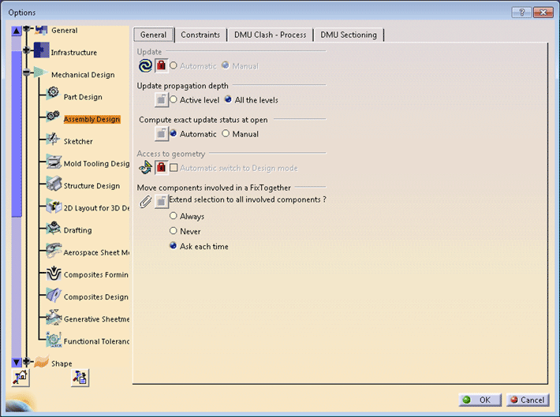
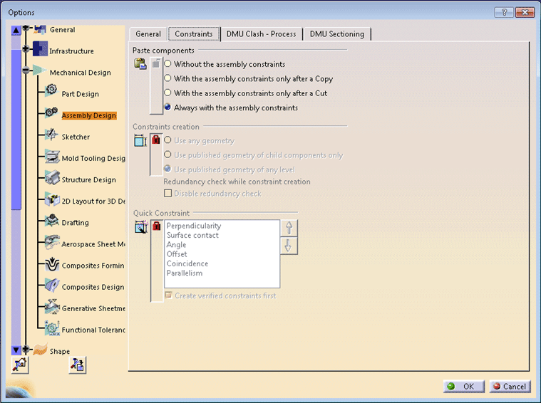

In addition to using the Tools->Options... command, many settings can be managed and administrated using Automation, thanks to Automation objects. This enables you to record the current settings, modify the settings values or lock the settings you feel appropriate, and apply this setting customization just running macros without entering all the property pages the modified settings belong to.
This macro shows you how to modify setting value and lock settings for general and constraints property pages in assembly design workbench. If a setting is locked in admin mode, its value won’t be editable in user mode.
CAAAsmModifyOptions.catvbs is launched in CATIA run in admin mode [1]. No open document is needed.
CAAAsmModifyOptions.catvbs is located in the CAAScdAsmUseCases module. Execute macro (Windows only).
CAAAsmModifyOptions includes the following steps:
- Getting the Settings Controller for the General Property Page
- Assigning Setting Values for the General Property Page
- Locking Settings for the General Property Page
- Getting the Settings Controller for the Constraints Property Page
- Assigning Setting Values for the Constraints Property Page
- Locking Settings for the Constraints Property Page
- Saving Setting Values and Other Data for Property Pages
Getting the Settings Controller for the General Property Page
...
' ----------------------------
' Get the settings controller
' ----------------------------
Set settingControllers1 = CATIA.SettingControllers
' ----------------------------
' Assembly / General options
' ----------------------------
Set asmGeneralSetting = settingControllers1.Item("CATAsmGeneralSettingCtrl")
...
|
The first object retrieved is the SettingControllers collection object in the settingControllers1 variable. Since the setting controller collection is aggregated to the Application object, simply calling CATIA.SettingControllers returns this collection. The next line retrieves a setting controller in the asmGeneralSetting variable thanks to the Item method of the setting controller collection to which the setting controller identifier CATAsmGeneralSettingCtrl is passed as argument.
|
 |
Assigning Setting Values for the General Property Page.
... ' ------------------------------ ' Get/Set the options values ' ------------------------------ asmGeneralSetting.AutoUpdateMode = catManualUpdate autoUpdt = asmGeneralSetting.AutoUpdateMode msgbox "Automatic Update mode = " & autoUpdt |
Here first line sets the value "Manual" for Update setting attribute in the general property page of the assembly design workbench and the second line reads the set value. In the third line the setting value read is displayed in a message box.
Similarly the macro sets values for other setting attributes in the General property page.
Locking Settings for the General Property Page
... asmGeneralSetting.SetAutoUpdateModeLock True isModified = asmGeneralSetting.GetAutoUpdateModeInfo (adminlevel, locked) msgbox "Automatic Update : administrator level = " & adminlevel & " - lock status = " & locked ... |
In the first line, as asmGeneralSetting.SetAutoUpdateModeLock is True so setting for Update setting attribute is locked. The second line reads the status of the lock which is displayed in the third line in a message box.
... asmGeneralSetting.SetUpdateStatusModeLock False isModified = asmGeneralSetting.GetUpdateStatusModeInfo (adminlevel, locked) msgbox "Update Status computation : administrator level = " & adminlevel & " - lock status = " & locked ... |
As the value for asmGeneralSetting.SetUpdateStatusModeLock is False in thefirst line, so "Compute exact update status at open" setting attribute is unlocked.
Getting the Settings Controller for the Constraints Property Page
...
Set asmConstraintSetting = settingControllers1.Item("CATAsmConstraintSettingCtrl")
...
|
This line retrieves a setting controller in the asmConstraintSetting variable thanks to the Item method of the setting controller collection to which the setting controller identifier CATAsmConstraintSettingCtrl is passed as argument.
|
 |
Assigning Setting Values for the Constraints Property Page
... asmConstraintSetting.PasteComponentMode = catPasteWithCstOnCopyAndCut paste = asmConstraintSetting.PasteComponentMode msgbox "Component constraints creation after a Paste = " & paste ... |
Here the first line sets value "Always with the assembly constraints" for the setting attribute "Paste components". The second line reads it which is displayed in a message box in the third line.
... asmConstraintSetting.QuickConstraintMode = catVerifiedConstraintFirst Dim newArray(5) newArray(0) = "CATAsmPerpendType" newArray(1) = "CATAsmSurfContactType" newArray(2) = "CATAsmAngleType" newArray(3) = "CATAsmDistanceType" newArray(4) = "CATAsmCoincidenceType" newArray(5) = "CATAsmParallelType" asmConstraintSetting.SetQuickConstraintOrderedList newArray quick = asmConstraintSetting.QuickConstraintMode Dim array array = asmConstraintSetting.GetQuickConstraintOrderedList() msgbox "Quick Constraint creation mode = " & quick msgbox "ordered list : " & array(0) & " - " & array(1) & " - " & array(2) & " - " & array(3) & " - " & array(4) & " - " & array(5) ... |
Here the first line is the setting value for the setting attribute "create verified constraints first". Setting value in first line is equivalent to check the box for the attribute. In the second line, we are creating array of (5+1) 6 elements and we are setting values to each array element subsequently. In the next line, we are setting order of constraint types to be listed for "Quick Constraint" setting attribute as per order of elements in newArray. Order of constraints will be read and saved in the quick variable in the next line. After that we are creating a new array and valuating it with the ordered list. The first message box will display the ordered list as it is saved in the quick variable and the second message box will display elements of the array which is again the ordered list of constraints.
Locking Settings for the Constraints Property Page
... asmConstraintSetting.SetPasteComponentModeLock False isModified = asmConstraintSetting.GetPasteComponentModeInfo (adminlevel, locked) msgbox "Component constraints creation after a Paste : admin level = " & adminlevel & " - locked = " & locked ... |
In the first line, as asmConstraintSetting.SetPasteComponentModeLock is False so setting for Update setting attribute is unlocked. The second line reads the status of the lock which is displayed in the third line in a message box.
... asmConstraintSetting.SetConstraintCreationModeLock True isModified = asmConstraintSetting.GetConstraintCreationModeInfo (adminlevel, locked) msgbox "Selectable elements to create a constraint : admin level = " & adminlevel & " - locked = " & locked ... |
As the value for asmConstraintSetting.SetConstraintCreationModeLock is True in the first line, so setting for the "Compute exact update status at open" setting attribute is locked.
Saving Setting Values and Other Data for Property Page
... asmConstraintSetting.SaveRepository ... |
This will save the changed setting values admin level and lock status.